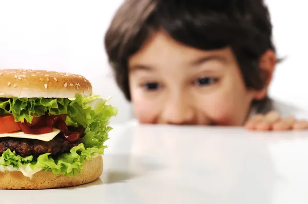
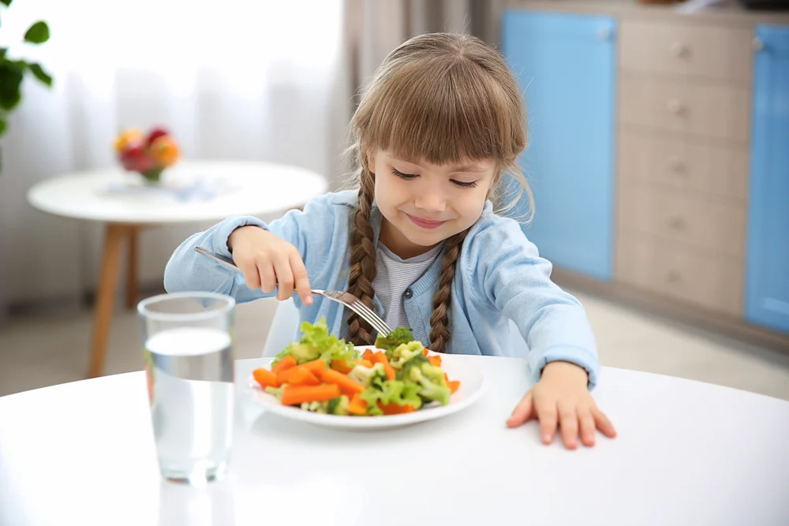
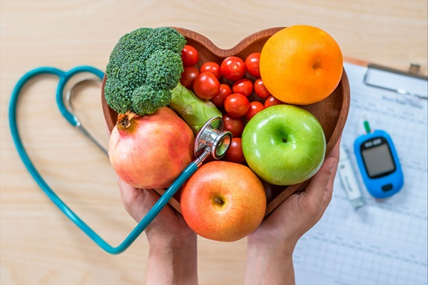

INFORMAÇÕES
Um estudo encomendado pelo Ministério da Saúde mostrou que uma em cada 10 crianças brasileiras de até 5 anos está com o peso acima do ideal: são 7% com sobrepeso e 3% já com obesidade. Já um quinto das crianças (18,6%) na mesma faixa etária estão em uma zona de risco de sobrepeso.
Acreditamos que a educação nutricional é fundamental para capacitar os pais e responsáveis a tomarem decisões informadas sobre a alimentação de suas crianças. Nossa abordagem busca fornecer orientações práticas e baseadas em evidências, adaptadas às diferentes faixas etárias e necessidades específicas dos pequenos.
Juntos, podemos fazer a diferença na luta contra a obesidade infantil. Vamos unir nossos esforços para educar, nutrir e cuidar da próxima geração, garantindo um futuro mais saudável e feliz para nossas crianças!
Para iniciar a educação alimentar infantil, é necessário se manter informado sobre o cenário da obesidade infantil em nosso país, e os alimentos mais prejudiciais às crianças. Dessa forma, inserimos abaixo duas documentações importantes para iniciar o processo conosco!
Obesidade infantil
Clique em "Saiba mais" para mais informações sobre obesidade infantil e descobrir se seu filho está com o peso ideal.
- Saiba mais

Alimentos prejudiciais
Clique em "Saiba mais" para obter informações sobre os alimentos mais prejudiciais às crianças, que são desbercebidos no dia à dia.
- Saiba mais
DICAS
Ao criar um ambiente alimentar saudável em casa, podemos influenciar positivamente as escolhas alimentares dos nossos filhos. Desde a despensa até a mesa de jantar, incentivamos o abastecimento de alimentos nutritivos, como frutas frescas, vegetais, grãos integrais e proteínas magras. Com isso, reduziremos o acesso a alimentos ultraprocessados, doces e bebidas açucaradas.
Reconhecemos a importância de envolver as crianças no processo de alimentação. Encorajamos atividades interativas, como o envolvimento na preparação das refeições, para despertar o interesse pelos alimentos saudáveis. Além disso, estabelecer horários regulares para as refeições e fazer refeições em família ajudam a criar uma atmosfera positiva e incentivadora.
No entanto, sabemos que educar a alimentação não se limita apenas à escolha dos alimentos. É importante sermos modelos positivos para nossas crianças. Ao demonstrar entusiasmo e prazer em comer alimentos saudáveis, incentivamos nossos filhos a adotarem hábitos alimentares saudáveis. Além disso, promover a prática regular de atividades físicas contribui para um estilo de vida ativo e equilibrado.
Dessa forma, nas documentações abaixo você poderá ter acesso a um conteúdo mais profundo das melhores dicas de introdução alimentar saudável para crianças, como retirar os alimentos prejudiciais, e por fim, poderá visualizar um conteúdo repleto de dicas sobre os melhores alimentos para iniciar o processo de reeducação alimentar.

Reeducação alimentar
Clique em "Saiba mais" para obter as dicas sobre a reeducação alimentar das crianças.
- Saiba mais

Alimentação saudável
Clique em "Saiba mais" para visualizar as dicas sobre os melhores alimentos de rico nutrientes para as crianças.
- Saiba mais